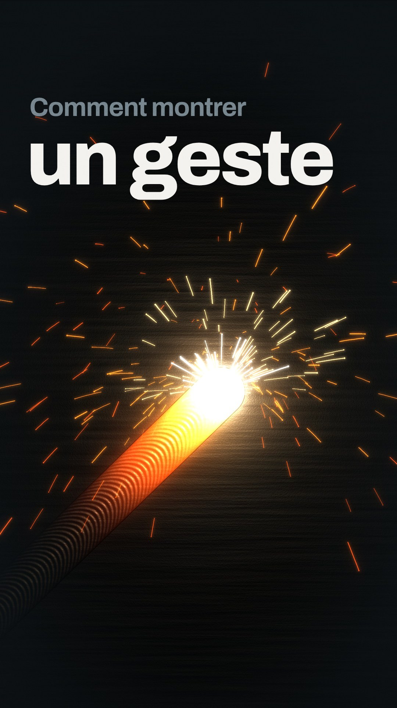
« Comment montrer un geste… »
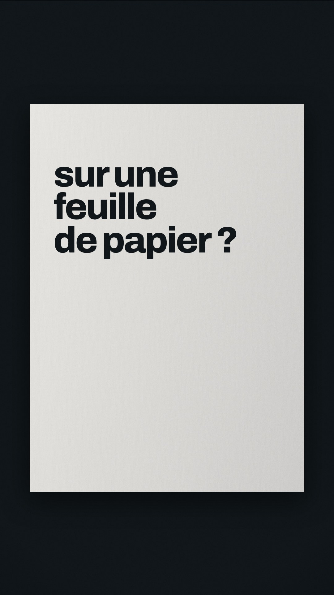
« …sur une feuille de papier ? »
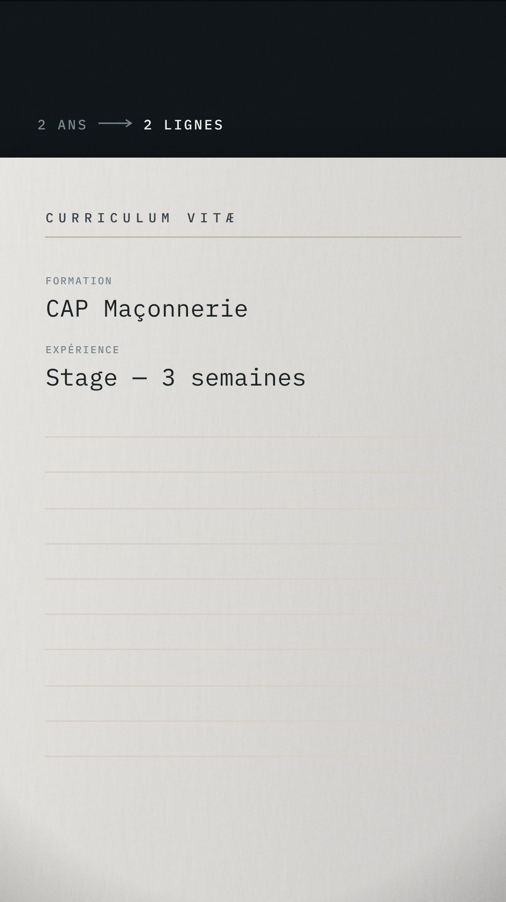
« Sur un CV, deux ans d'apprentissage tiennent en deux lignes. »
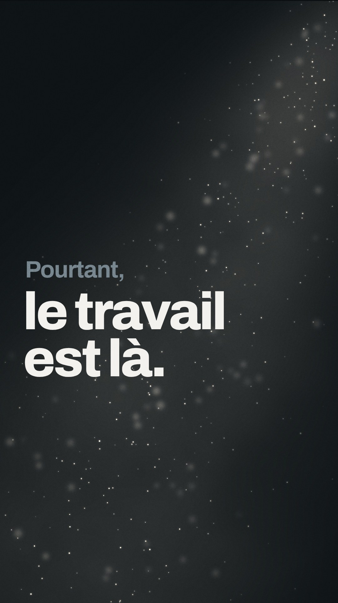
« Pourtant, le travail est là. »
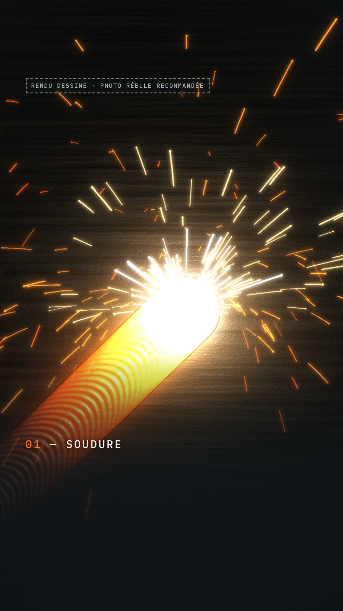
« Une soudure. »
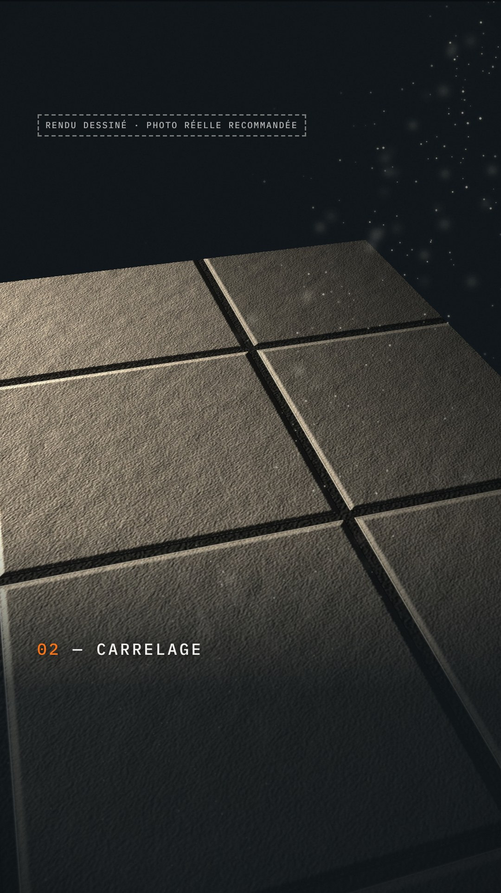
« Un carrelage posé. »
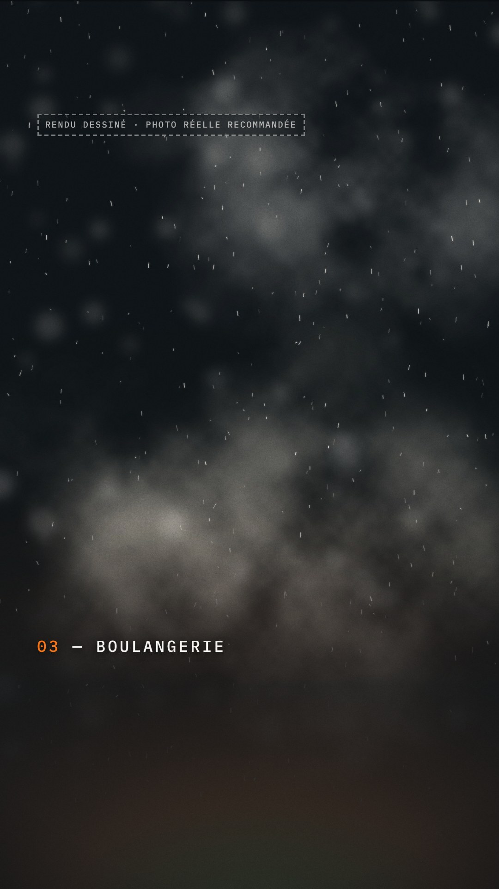
« Un pain qui sort du four. »
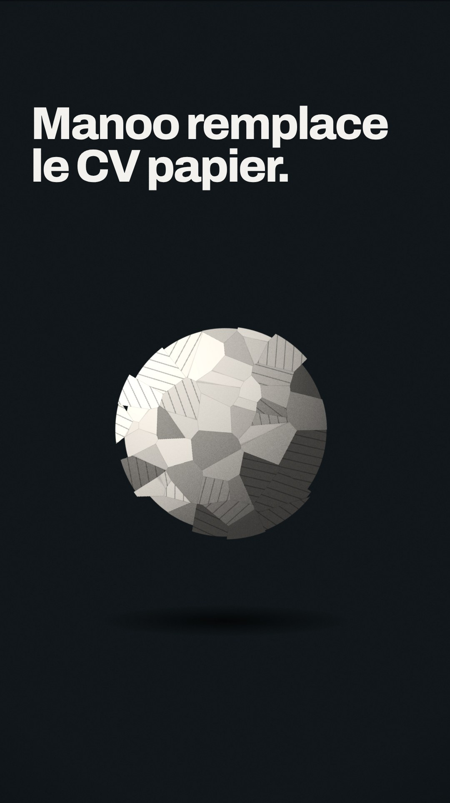
« Manoo remplace le CV papier. »
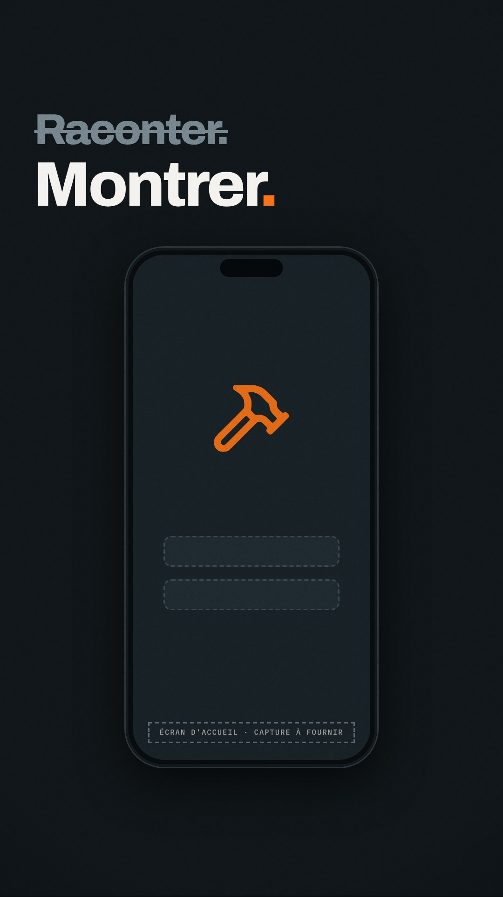
« On ne raconte plus son travail. On le montre. »
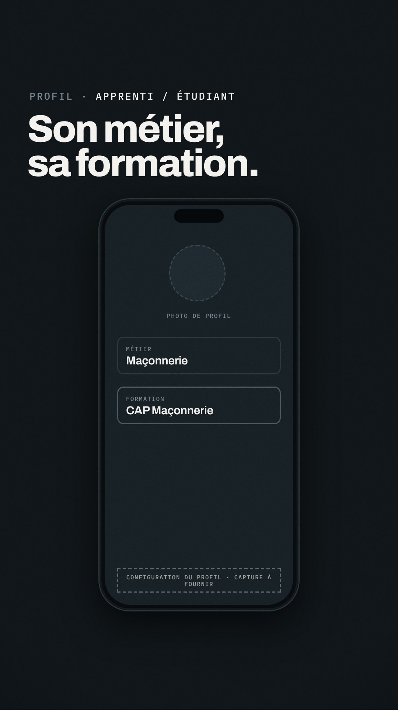
« L'apprenti crée son profil : son métier, sa formation. »
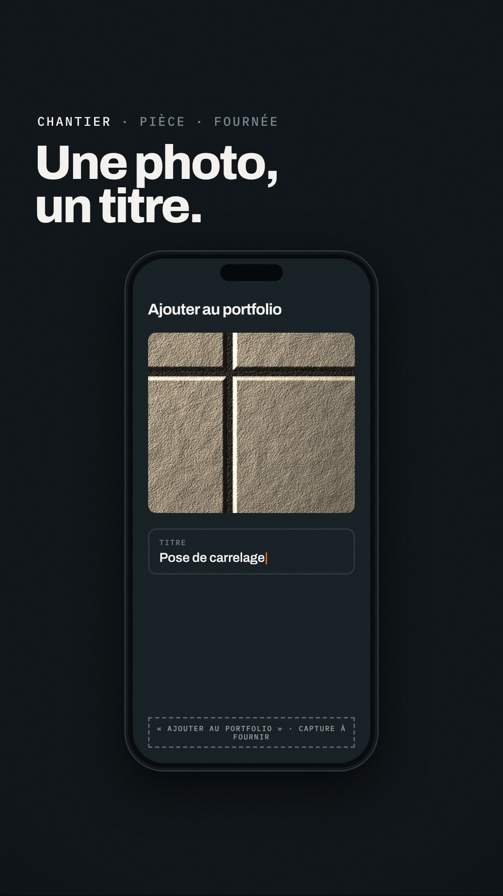
« Puis, à chaque chantier, chaque pièce, chaque fournée, il ajoute une réalisation. Une photo, un titre. »
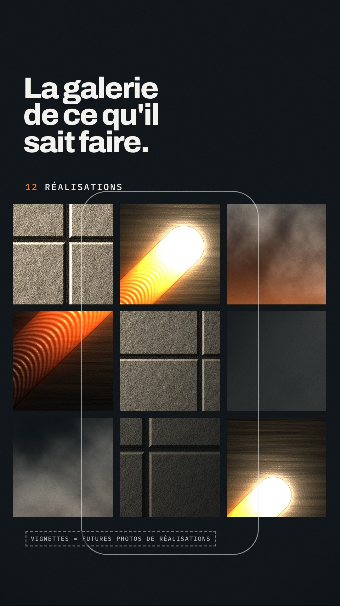
« Son profil devient la galerie de ce qu'il sait faire. »
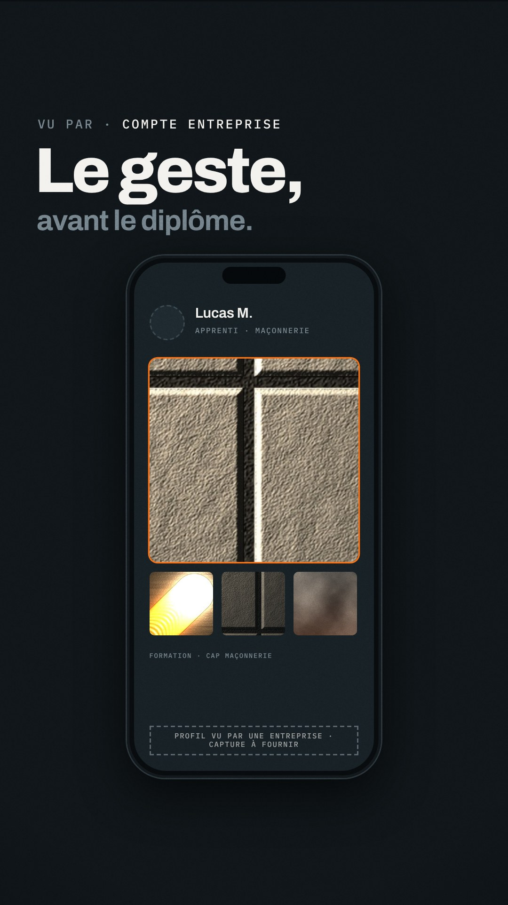
« Et l'artisan qui recrute voit le geste, la motivation… avant le diplôme. »
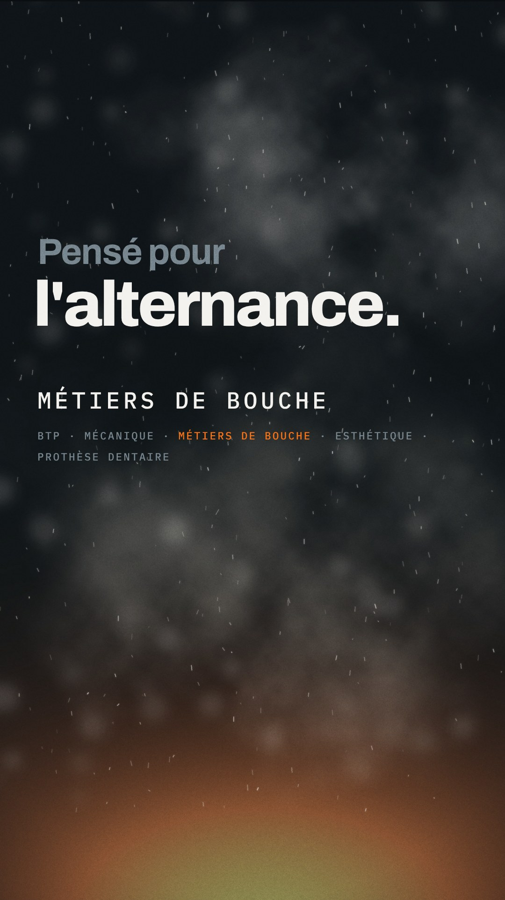
« Manoo est pensé pour l'alternance. »
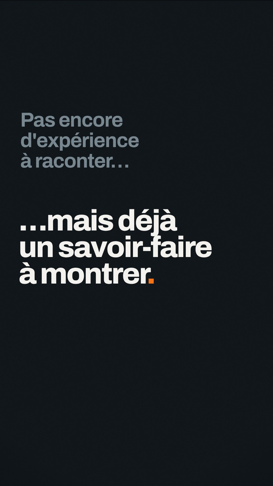
« Pour ceux qui n'ont pas encore d'expérience à raconter… mais déjà un savoir-faire à montrer. »
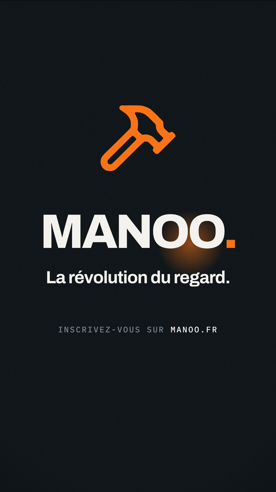
« Manoo. La révolution du regard. Inscrivez-vous sur manoo.fr. »